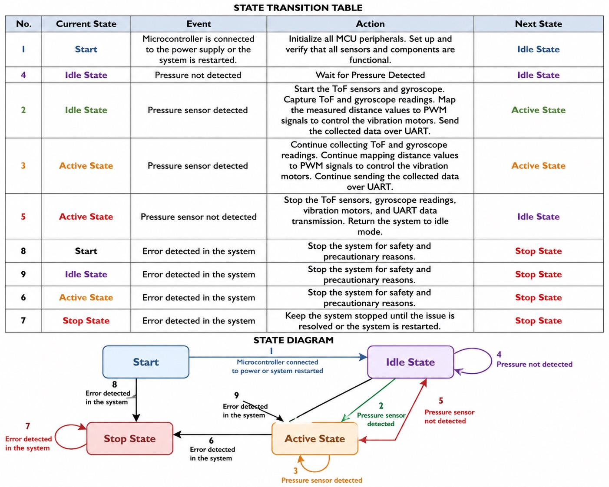
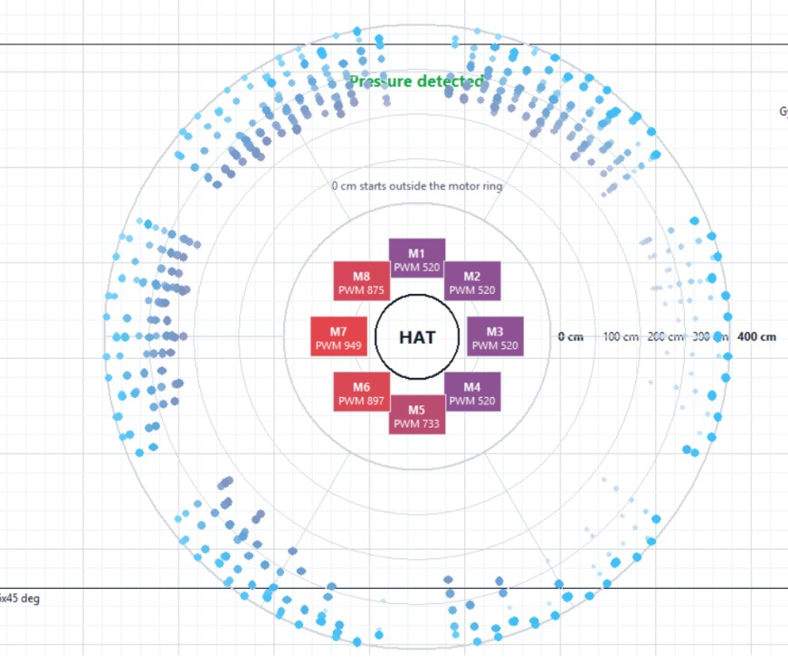
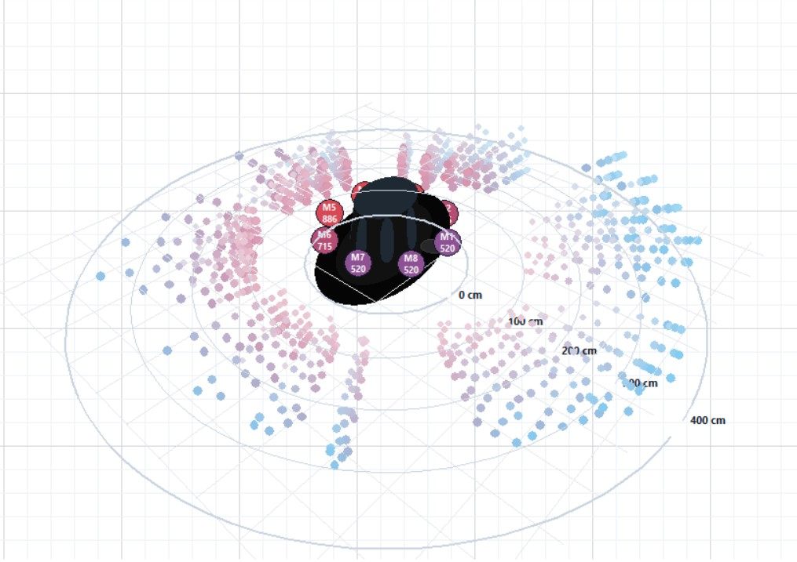
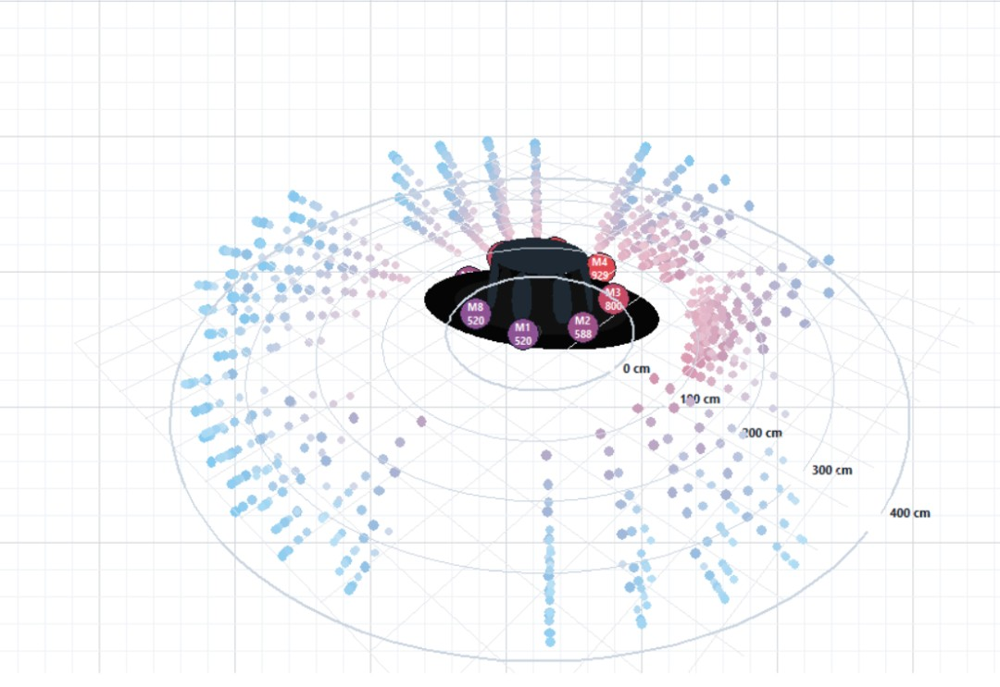

Software Design
The embedded firmware was structured using a finite state machine (FSM) that manages the full sensor to haptic feedback pipeline. The systems boots into a low-power idle state, and only activates when the FSR sensors detect the hat being worn, reducing battery consumption during periods of no use. The system also include LED lights for debugging purposes, as well as additional sensors to best utilize the 3D map created by the ToF sensors.

Sensor Spatial Mapping
Each ToF sensor operates in a 3×3 multi-zone mode, returning 9 simultaneous distance measurements per sensor. With three sensors, the system collects up to 27 depth values per frame at up to 60 Hz.
A majority-voting filter is applied across 5–10 consecutive frames. For each spatial zone, the most frequently occurring distance value is selected as the representative reading. This eliminates noise and outlier measurements before the system decides whether to activate a motor, improving reliability and reducing false triggers.

Figure 8a: (see top-right) Second visualization of multi-zone sensing coverage. Viewing mode is adjustable to better simulate the 3D environment mapped out by the ToF sensors.
Figure 8b: (see bottom-right) Third visualization of the multi-zone sensing coverage. Demonstrate 3D view from another point of view.


Control Pseudocode
Interrupt — Start on Pressure Detected
LOOP // Sensor collection
New readings → Map[8×4] (4 sensors × 8 zones)
SAVE MAP[1], MAP[2], MAP[3], MAP[4]
COMPARE MAPS (majority voting)
Final MAP READY
END LOOP
LOOP // Motor control
RESTART GPIO
NearDistance[32] = 0
NearLocation[32] = 0
FOR each zone i in Map:
IF Map[i] < threshold (e.g. 3 m):
NearDistance[i] = Map[i]
NearLocation[i] = i
SWITCH NearLocation:
CASE 1–8:
Set PWM duty cycle ∝ NearDistance strength
WAIT 50 ms
RESTART GPIO
END LOOP
Interrupt — Stop on No Pressure DetectedThis system was designed with several safety measures to ensure reliable and user-safe operation. At the end of each control loop, all GPIO outputs are reset to their default state (logic low). This guarantees that if any pin is incorrectly configured or an error occurs, the system will default to zero output, preventing unintended vibration. Additionally, a timer mechanism is integrated to allow the system to reset if it becomes stuck in a loop, improving robustness and fault recovery. The system is also implemented using a finite state machine (FSM), ensuring that all operations follow a well-defined and logical sequence of states. For user safety and control, the system includes a pressure-based mechanism inside the hat. If the user removes the hat (i.e., pressure is released), the system immediately resets from any current state, allowing the user to stop the device at any time.